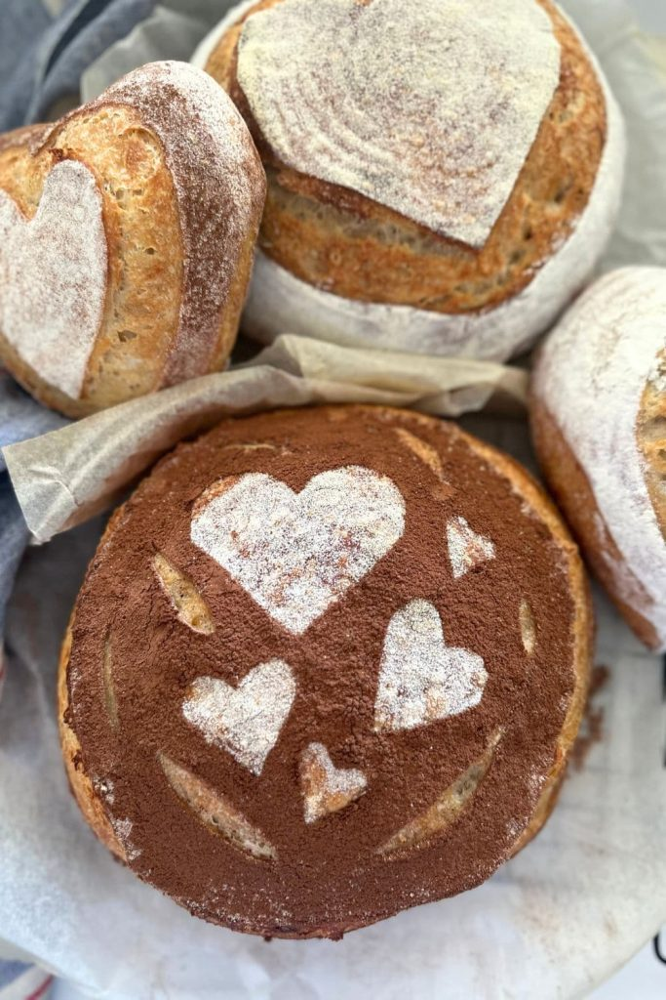
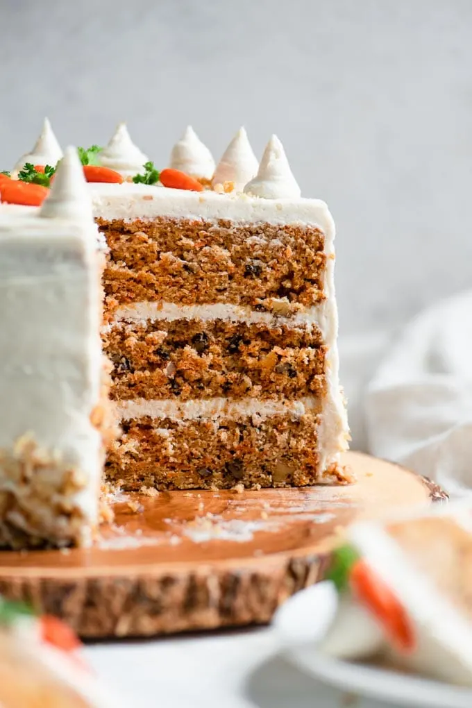

Denzels Sweet Treats
Why I started Doing What I Am Doing
"I discovered this love for baking at the tender age of 10 when I baked my first batch of chocolate chip cookies with his grandmother. The joy of creating something delicious from scratch enthralled me. Over the years, I perfected my skills by experimenting with various recipes and even creating some of his own. My dream is to share the joy of baking with others and inspire them to create their own baked wonders."
Three Of My Personal Favorite Recipes
Almond Crossiant
A delicate pastry filled with the sweet nutty goodness of almond paste, dusted with powdered sugar, and baked to a golden perfection
Ingredients
- 1 sheet of puff pastry
- 1/2 cup of almond paste
- 1/4 cup of powdered sugar
- 1 egg (for egg wash)
Instructions
- preheat the oven to 375°F
- Next, roll out the puff pastry and cut it into triangles, and Spread a thin layer of almond paste on each triangle
- Then, roll each triangle from the base to the tip and curve into a crescent shape.
- Finally, brush with egg wash and sprinkle with powdered sugar, and bake for 15-20 minutes until it’s golden brown.
Sourdough Bread

A community favorite, boasting a crusty exterior and a soft, airy interior, embodying the classic sourdough charm
Ingredients
- 1 cup sourdough starter
- 1 1/2 cups warm water
- 4 cups bread flour
- 1 1/2 teaspoons salt
Instructions
- First, mix the starter, water, and 3 cups of flour in a large bowl. This should create a sticky dough
- Next, add salt, and remaining flour 1 tablespoon at a time until they are fully incorporated
- Then, knead the dough on a floured surface for about 15 minutes. Once the kneading is done, place the dough in a lightly greased bowl, cover it, and let it rise for about 5 hours
- Finally, shape the dough into a loaf, and let it rest for 30 minutes. When you are ready to bake, preheat your oven to 450°F and bake for about 30 minutes until it's golden brown.
Classic Carrot Cake

An homage to tradition and familial bonds, enriched with the natural sweetness of carrots and a crunch of walnuts, it holds a special place in my heart as it was my late grandfather's favorite. Every year on his grandfather's birthday, I bake this cake to honor his memory and the bond I shared over the love of baking.
Ingredients
- cups all-purpose flour
- 2 cups granulated sugar
- 1 teaspoon baking soda
- 2 teaspoons cinnamon
- 2 1/2 teaspoon salt
- 1 cup vegetable oil
Instructions
- First, preheat the oven to 350°F. Next, mix together the flour, sugar, baking soda, cinnamon, and salt in a large
bowl.
- Then, stir in the oil and eggs until smooth. Fold in the carrots, pineapple, and walnuts
- Then pour the
batter into a greased baking pan and bake for 30-35 minutes. Make sure you allow the cake to cool before frosting
with cream cheese frosting
Baking Tips
importance of measuring ingredients accurately, allowing eggs and butter
to reach room temperature before baking, and rotating the baking tray halfway through the baking time for an even
bake.
Quotes from happy customers
- Tina said, "Denzel’s sourdough is the best in
town. It has the perfect crust and is always so fresh!"
- Jordan raved, "The almond croissants are a little bite of
heaven. I can’t get enough"
Contact Information
- denzelstreats@gmail.com
- linkedin.com/in/denzel-baker
- instagram.com/denzelstreats
- facebook.com/DenzelsBakery